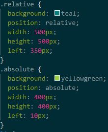

Fixed positioning is a state where an image or object remains at a fixed position regardless of page scroll or mouse movement.
If an image is set to fixed as a background image, it would mean that any overlaying properties such as text, links, media or images,
that aren't also at a fixed position could slide over the top of the background. If an image is set to fixed at a certain location within the page,
the image will not move from it's location and will always load there.
Absolute positioning means that whatever contains the property of absolute will be ignored by other elements and will overlap them if they conflict with each other.
This can lead to the absolute element covering over other elements if placed improperly. Absolute positioning ignores the flow of the page and does it's own thing.
Relative positioning is as it's name states, the element that contains the relative property will be added relative to whatever contains the element.
If a relative positioned element has no containment field, it will default to being contained within the body of the page. Relative position is the most useful tag
to apply to elements that want to be fixed, but still functions with the flow of the page.
In short, the difference between the 3 positions is as follows:
The box here is relative positioned on the page decided by numerical values.
The box which contains this text is "absolute positioned" within the parent box also decided by numerical values.
As we can see here, the background is stationary and doesn't move even when you scroll the page. This is because the background image has been assigned a fixed position.
It's fixed position is to remain in the background, covering the entirety of the page where it won't overlap any other elements that are placed over the top.
However, the relative positioned box is stationed relative on the page to whatever came before itself. If I wish to move the position of the relative box elsewhere,
I would need to input numerical values to the "top, left, bottom and right" styling within css in order to move the element relative to its position.
While the absolute box remains in the relative box, regardless of where I position the relative-box relative to the page, the box inside relative-box will remain at it's fixed location.
This is what is meant by absolute value vs relative value. Relative positioning is more free-flowing, while absolute is more targetted.
As the above image illustrates, as correlating to box position, the relative positioned box has a left numerical value of 350px(pixels),
which means the box has been positioned 350pixels relative to the left of the page.
Whilst the absolute box, despite only having a left numerical value of 10pixels, it does not position itself relative to the left of the page because it is absolutely contained within the relative box.
As such, the absolute box only moved 10 pixels left from the parent box.